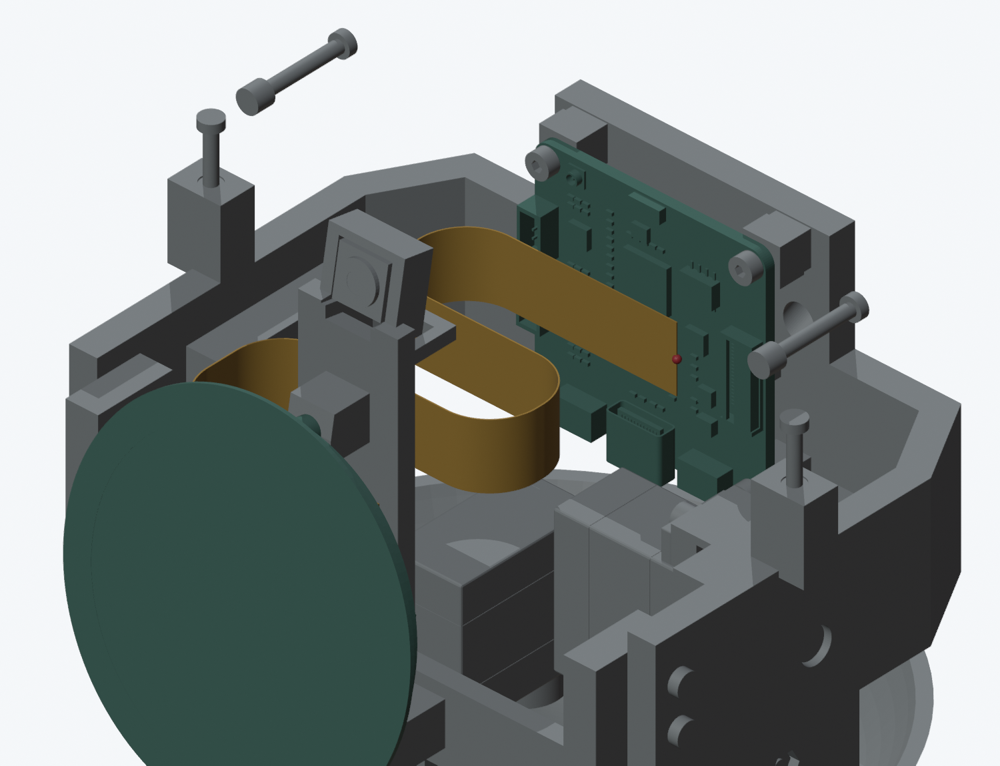
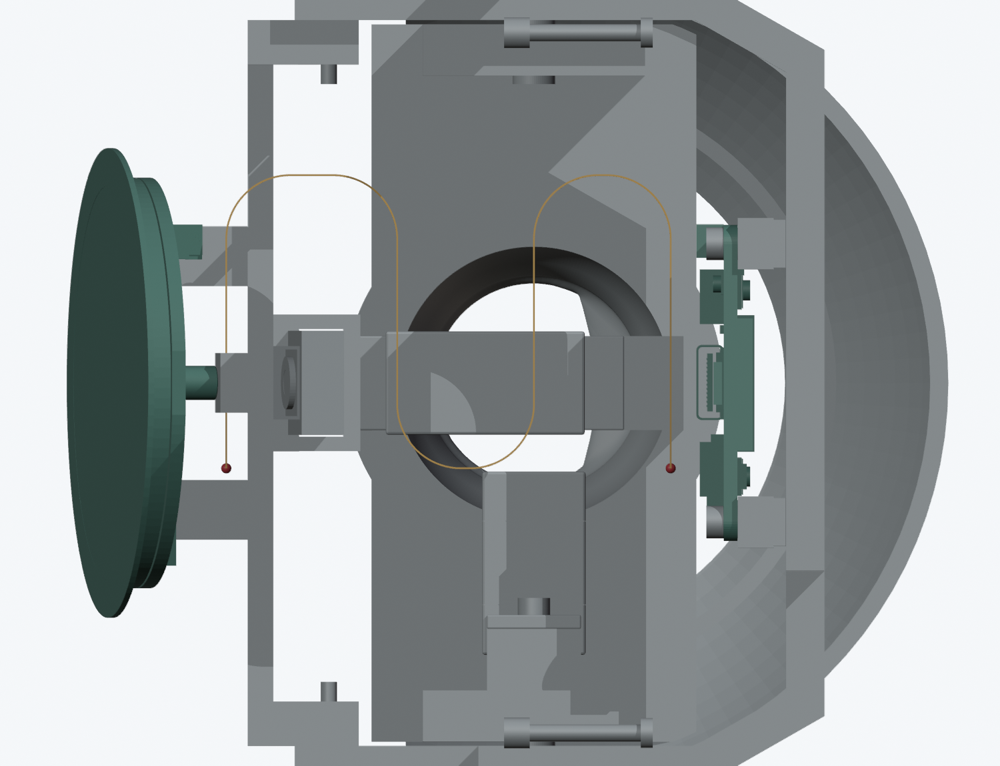

返回线束总进展
头内排线有收纳空间；两端尚未连接
主模型 M1.49 C5＋K1 未改动。橙色是未应用的170 mm中央段容量模型；红点是未连接端部。两端共30 mm只作长度预算，图中未建模。

连续圆弧收纳，不增加打印件。宽厚和允许弯曲半径仍需确认，排线的固定与端部插入尚未完成。
| 这次完成 | 检查范围 |
|---|
| 屏幕／相机端点的运动关系 | 同属俯仰组，130姿态保持相对位置；不需要因头部运动而在端点间反复弯折。 |
| 中央段收纳容量 | 170 mm，假定宽10.5、厚0.2、R7.5 mm；8种参数组合预检通过。 |
| 运动中的中央段空间 | 130姿态，对当前刚体及已有11条候选线的1430个组合通过有限检查。 |
| 前后壳指定平移路径 | 各273个位置与该中央段无新增干涉；不是完整带线装配通过。 |
尚未完成
两端触点面、插入深度和过渡形状；实际线宽、厚度、补强和允许弯曲半径；固定、应力释放和插拔过程。完整屏幕排线及完整线束仍为 BLOCKED。
200 mm随屏线的规格来自微雪产品资料。没有用容量假设代替厂家尺寸，也未将该模型加入主模型或装配视频。

从上方看中央段形状。它避开了相机支架和舵机，但暂时没有用于保持形状的固定设计。
范围、假设与剩余工作 · 可编辑 Blender 候选 · 当前头部剖面
接口与运动组 · 容量组合 · 姿态检查 · 壳体路径 · 主文件保留检查 · 命令记录 · 资料来源
后续复核：入口方向与旧长度预算
相机座重建朝向与已接线照片相反；CAM屏幕座不能一起翻转。LCD原CAD支持从−X接近，原先分配给屏幕端的15 mm不足以完成转向，需要重做完整路径。
查看官方照片、当前模型与方向对照
后续：完整排线空间候选
194 mm屏幕自由段已通过130个姿态、候选导线与头壳拆装空间检查。CAM端补强长度和允许弯曲仍未知；相机通道末段仅约0.3 mm名义侧隙，完整排线及线束均未完成。
查看最新空间候选、失败记录和选型条件